一座浮在海上的樂園，每座島都是一個遊戲
升上小五，最怕的就是背社會、背單字。與其逼著背，不如先讓孩子覺得「這個好像有點有趣」。所以把科目做成樂園裡的島，一個帳號就能玩全部。
2000 個單字，變成守城的魔力
範圍是教育部公告的國中小 2000 個基本英文字彙，從國小最常用的 300 字開始，照生活主題分關、由淺到深。一關大約 3 到 5 分鐘。
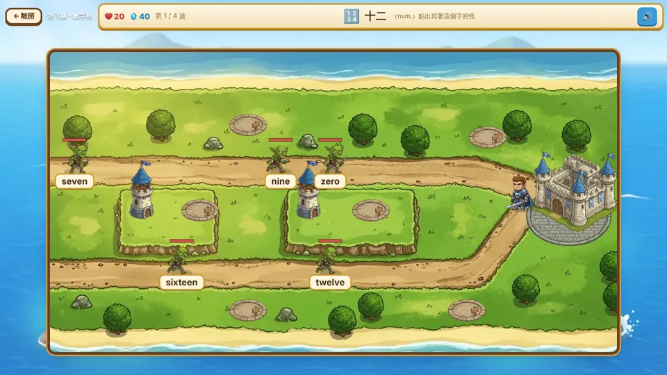
看中文，點出對的英文
怪物身上寫著英文字，上面出中文，點對了箭塔才會發射。也有只聽發音的「聽字」，和一個字母一個字母的「拼字」，不是只有選擇題。
看更多：關卡主題和設計理念
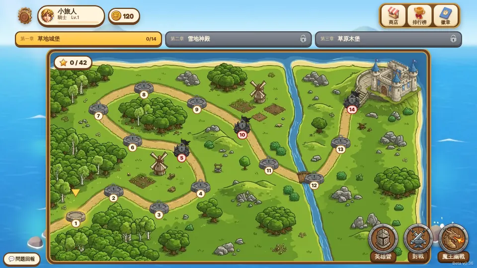
一關一個生活主題
數字、身體、動物、顏色……先從看得見摸得到的字開始，再慢慢到時間、動作、感覺這些抽象的字，難度自然往上爬。
希望孩子是「想多答對幾題」，而不是「想辦法刷分」
- 每一個動作都要答題蓋塔、派兵、打魔王都靠答對。英文不是遊戲旁邊的作業，而是遊戲本身。
- 只有答對才會變強時光幣和經驗只從答對來，花錢買不到，也沒有掛機。
- 同一個字刷不了一直重玩同一個簡單的字，獎勵會越來越少，鼓勵往新的字前進。
- 常錯的字會多出幾次重玩時優先出孩子常答錯的字，不知不覺就在複習弱點。
- 答錯不會被罵答錯只是少打一下，不會扣光、不會被淘汰，孩子敢猜、敢試。
- 可以跟同學一起魔王團戰要大家一起答題才打得倒，也有跟同學的分身對戰。
跟著小石虎斑斑，到祕境島找媽媽
這是一個冒險遊戲：孩子在島上走來走去、轉動視角找線索，還會變成枯葉蝶、螞蟻、魚。課本裡的自然知識，就是這個世界的規則，懂了才過得去。目前有 8 關，關卡陸續增加。
- 森林動物的偽裝
- 螞蟻地下城群體分工
- 海港工坊生鏽與防鏽
- 劇場小鎮聲音
- 山頂天文台太陽與影子
- 池塘水生植物和魚
- 海港燈塔燃燒與滅火
- 光的魔術舞台光
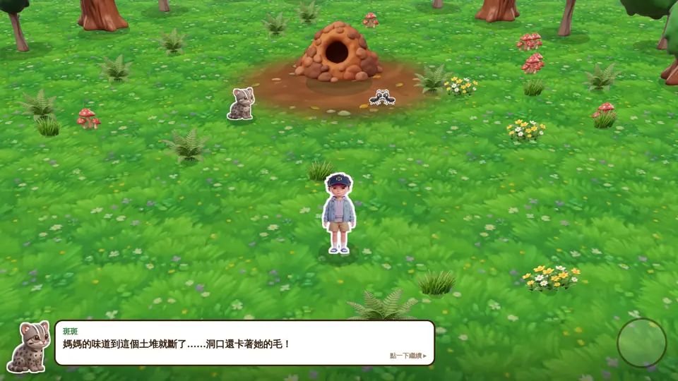
變成螞蟻，鑽進地底
先觀察兩隻螞蟻碰觸角，再變成螞蟻鑽進洞裡：在黑暗裡聞氣味找路、找同伴一起搬餅乾、通過兵蟻找到蟻后。過關後收進「祕境圖鑑」的卡片，寫的就是課本重點：螞蟻怎麼分工、怎麼傳遞消息。
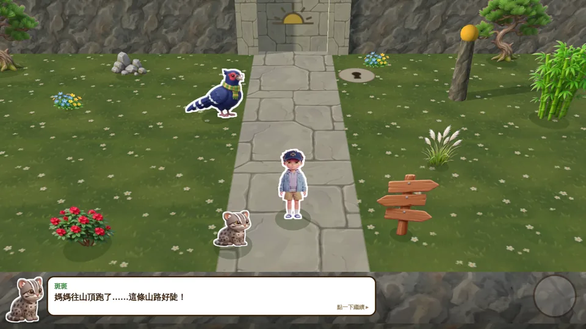
用太陽的影子開門
轉動星盤改變時間，讓石柱的影子剛好碰到鑰匙孔；中午影子最短，下午倒向另一邊。親手調過一次，「太陽的位置和影子」就不用死背。
看更多：整座祕境島
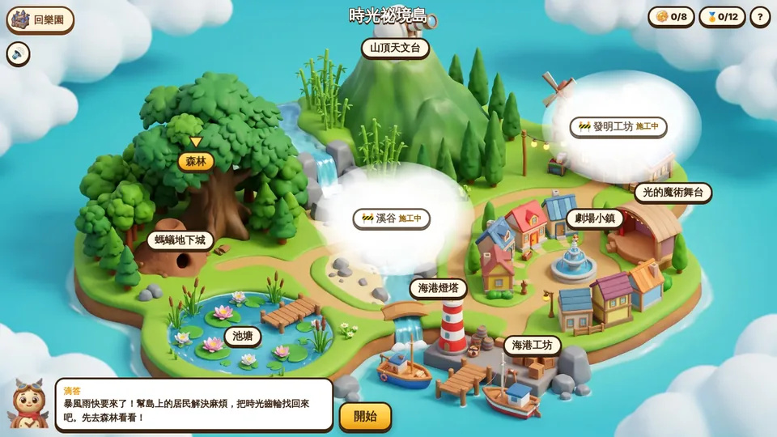
一座島，四個區域
森林、海港、劇場小鎮、山頂天文台，每一關找回一個時光齒輪，關卡照順序打開。答錯時提示會一步一步變清楚，不會卡著不知道怎麼辦。
自然還在試營運，之後會補上溪谷、發明工坊等區域。內容參考五年級自然課本，各版本單元順序不一樣。
讓孩子有一個想回來的地方
學習的東西在各座島上；樂園裡另外留了一塊屬於孩子自己的地方。它不考試，只是讓孩子對這個樂園有感情，願意明天再來。
「布丁今天有沒有乖乖等我？」
寵物島：一隻會等你的夥伴
第一次來就有一顆時光蛋，孩子自己挑小狗、小貓或黃金鼠，再幫牠取名字。可以餵食、摸摸、丟球，看牠在島上跑來跑去；白天黑夜、季節和天氣跟著真實時間變。
幾天沒來牠會肚子餓、鬧點小脾氣，但不會生病、也不會死掉，回來摸摸就和好了。我們想要的是「想念」，不是「愧疚」。
「下一顆蛋會是誰？」
12 隻夥伴，要過關才拿得到蛋
- 小狗
- 小貓
- 黃金鼠
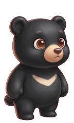
黑熊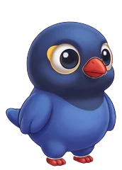
藍鵲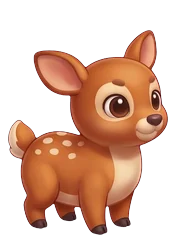
梅花鹿- 穿山甲
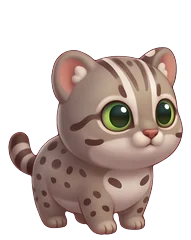
石虎- 小火龍
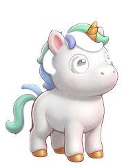
獨角獸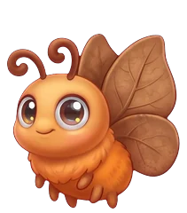
枯葉蝶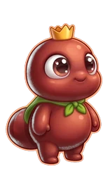
小蟻公主
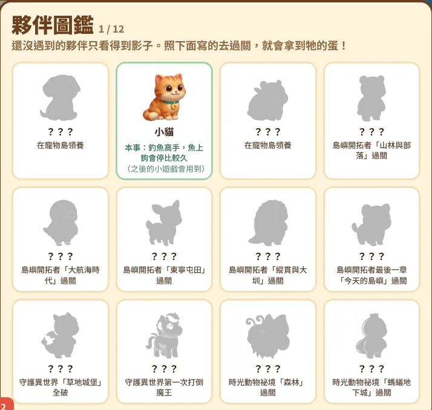
除了一開始的三隻，其他夥伴都要在某一座島過關才會拿到蛋：社會過某一章、英文打倒魔王、祕境島走完森林……蛋要隔一天才孵。圖鑑裡還沒遇到的夥伴只看得到影子，孩子自然會想去玩下一關。
每隻夥伴有自己的本事，像穿山甲每天挖一份點心、藍鵲去拜訪別人時會帶回禮物，之後的寵物小遊戲也會用到。
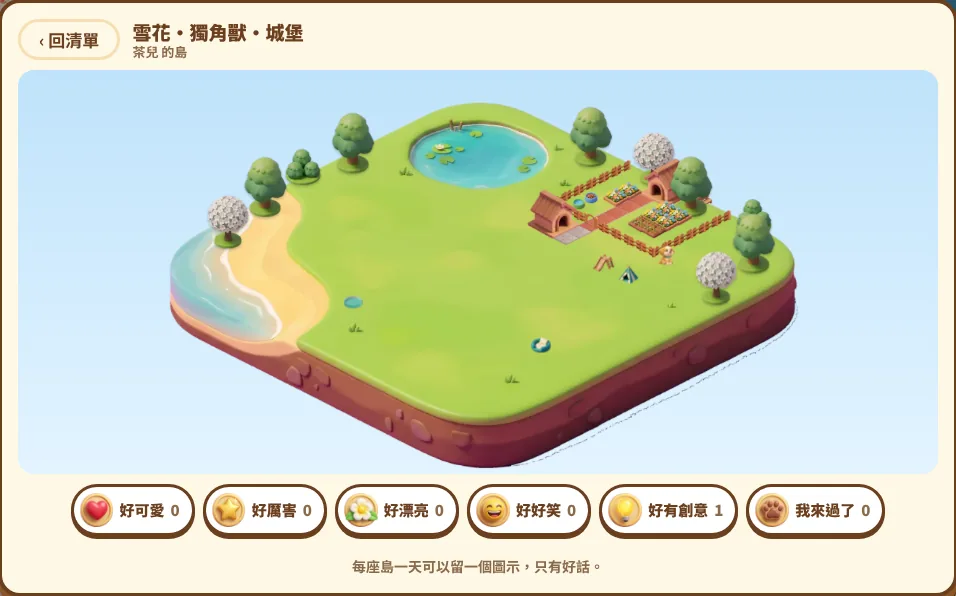
「我的島被按了好有創意！」
佈置自己的島，也去別人的島逛逛
傢俱、樹和裝飾都由孩子自己擺。可以拜訪同班、同伴圈或「今日精選」的島，看別人的夥伴在島上走動。
拜訪時只能留好話圖示（好可愛、好有創意……），一座島一天一個，沒有打字留言。
看更多：時空旅人、商店、每日任務和勳章
「這是我在樂園裡的樣子！」
時空旅人：我自己的角色
孩子挑臉型、髮型和一套起始衣服，捏出自己的時空旅人。排行榜、名片上看到的都是它，不用放真實照片。想換新衣服，要靠自己玩出來的時光幣去商店換。
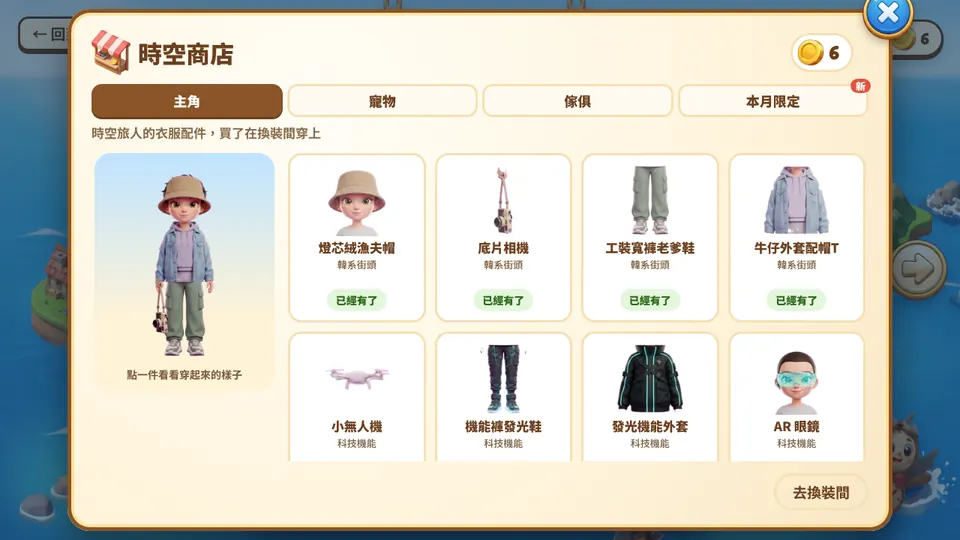
「再存一點，就能買那件發光外套了！」
時空商店：只收時光幣，不收台幣
主角衣服、寵物點心、寵物島傢俱和本月限定，都只能用玩出來的時光幣換，沒有儲值、沒有抽卡、沒有廣告。存錢買想要的東西，本身也是一個小小的練習。
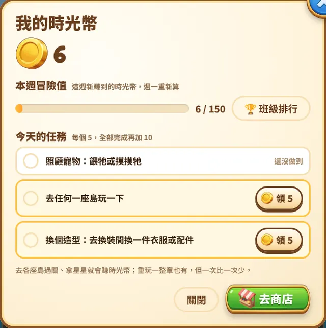
每天三個小任務
像「去今天指定的島玩一下」「照顧寵物」這種小目標，五分鐘就能完成，讓孩子養成「每天來一下」的習慣，而不是一次玩很久。
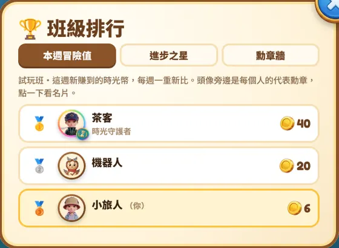
護照和勳章
每座島都有勳章可以收集，蓋在樂園護照上。過關、拿星星、寫試煉卷都會賺時光幣。
從孩子的錯題，自動出一張測驗卷
玩是為了有興趣，但大人也想知道孩子到底懂了沒。家長或老師在後台按一下，就依孩子在遊戲裡的對錯挑好題目；孩子收到信鴿信，到樂園外的「時光試煉島」找貓頭鷹考官作答。
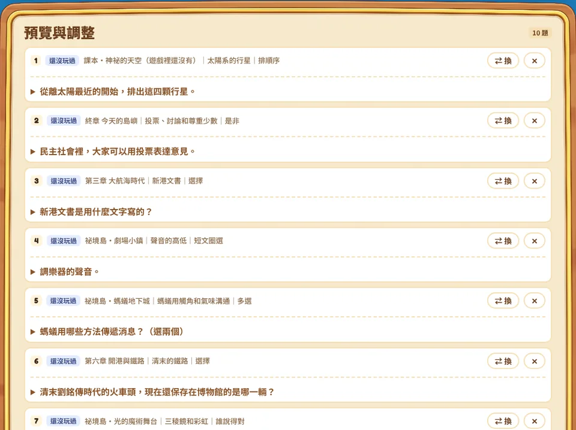
大人：按一下自動挑題
5 成是孩子待加強的、3 成是玩過還沒學會的、2 成是還沒玩過的；已經學會的不出。可以只考某次段考的範圍、換掉不想要的題，也能自己加一題。
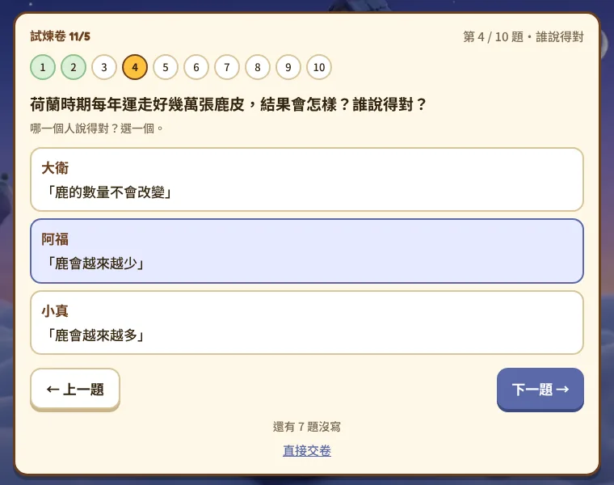
孩子：到試煉島作答
是非、選擇、多選、誰說得對、分類、短文圈選、排順序，接近學校評量的題型，但一次只出一題，慢慢讀。
交卷馬上看解析，再訂正一次
每一題都說明為什麼對、錯的為什麼錯，不是只給答案。寫錯的可以訂正，全部改對再拿時光幣。分數是用來找出還不熟的地方，考不好也有幣拿。
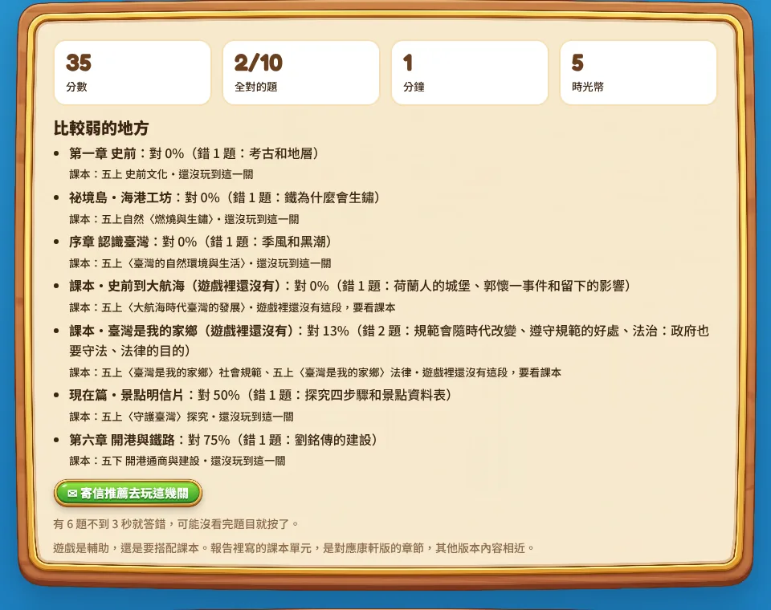
大人看報告：該翻課本哪一段
報告列出比較弱的地方、對應課本哪個單元、遊戲裡哪一關可以再玩，還會提醒「有幾題不到 3 秒就答錯，可能沒看完題目」。可以一鍵寄信推薦孩子去玩那幾關，也能列印成紙本。
看更多：學習地圖、時光幣和題目怎麼來
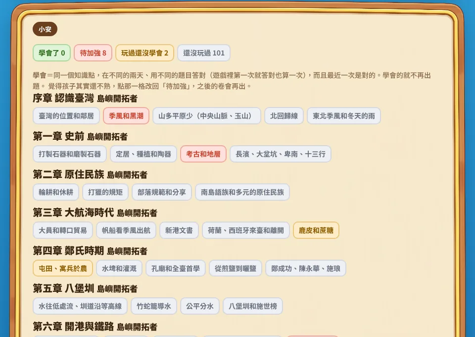
學習地圖
每個知識點標成學會了、待加強、玩過還沒學會、還沒玩過。「學會」要在不同的兩天、用不同的題目答對，學會的就不再出題。
- 時光幣刷不了100 分 30 個、80 分以上 20 個、60 分以上 10 個、其他 5 個；每星期最多 3 張卷給幣。
- 題目有出處、有人審每題都標課本出處和解析，審過才會被抽到；孩子覺得哪一題怪怪的，可以直接回報。
- 家長看得到學校的卷孩子在學校班寫的卷，連起來的家長也看得到（只能看）；老師看不到家庭班的卷。
- 英文卷準備中目前出社會和自然；英文單字在守護異世界的細節頁就看得到哪些字常錯。
自己開一個班，孩子玩了什麼一目了然
學校老師可以開全班，家長可以開一個「家庭班」，兄弟姊妹、親戚的孩子都能一起加入。開班免費，只要 email 和密碼，不用收確認信。
誰有在玩，打開就知道
全班總覽把最近有在玩的孩子排在前面，每個人寫著「最後活動 18 分鐘前」、最後在玩哪一座島、第幾章；超過 7 天沒來、答對率偏低、密碼試錯被鎖住會標紅。
遊玩紀錄：每天玩了多久
一張表看這一週每天各玩了幾分鐘，顏色越深玩越久。點名字，就看得到孩子每天去了哪些島、從幾點玩到幾點。玩太久、太晚還在玩，或好幾天沒來，都看得出來。
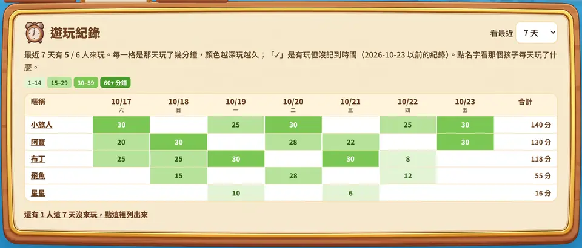
細節頁：看得出卡在哪裡
每座島都有自己的細節頁，用家長看得懂的話寫：社會看每章「想一想」哪一題錯最多，英文分認字、拼字、聽音看哪個弱，自然看每一關卡在哪一步。
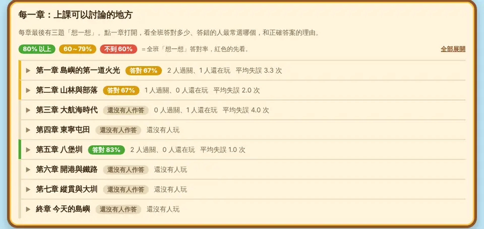
看更多：孩子的回報和其他小幫手
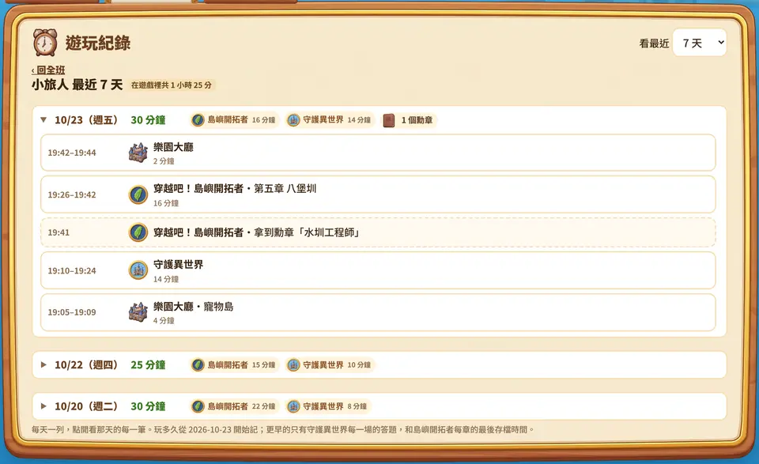
點進一個孩子
每天一列，點開看那天幾點在哪個遊戲、玩了幾分鐘、拿到什麼勳章。
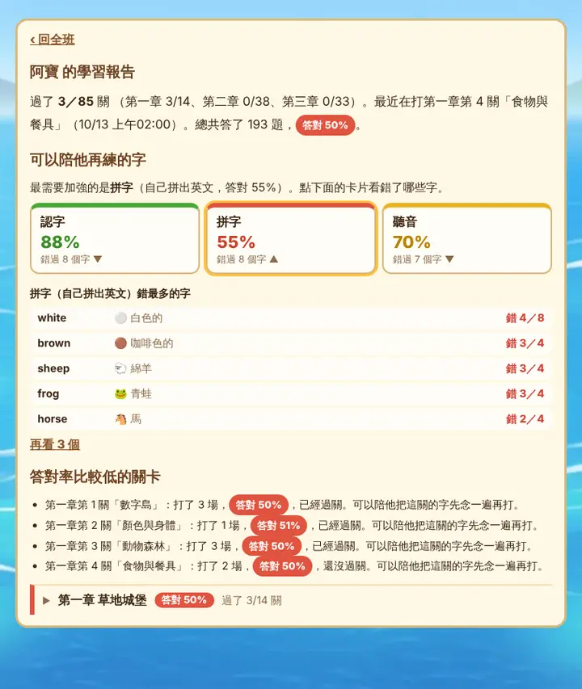
英文：認字、拼字、聽音哪個弱
馬上知道孩子是「看得懂但拼不出來」還是「聽不出來」。點卡片看錯最多的字，陪孩子把那關的字先念一遍再打。
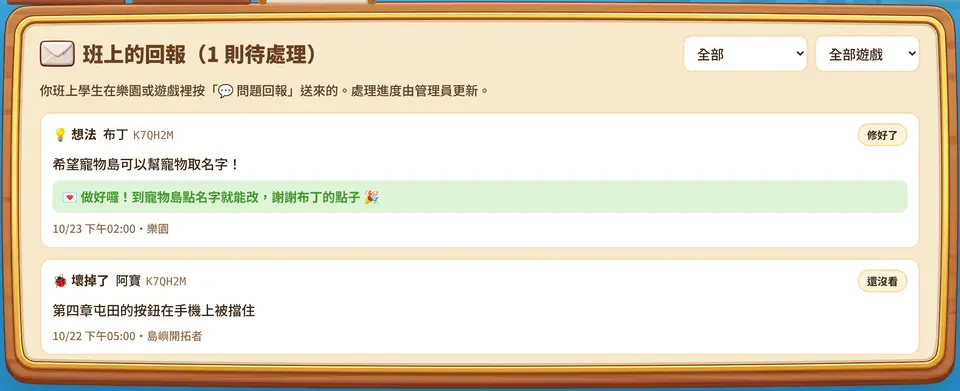
孩子的回報，你也收得到
孩子在遊戲裡按「問題回報」說哪裡卡住、想加什麼，後台都看得到處理進度和我們的回覆。建議被採用的孩子，名字會出現在「時光修理站」的小幫手牆上。
忘記密碼直接重設
順便解鎖試錯被鎖住的帳號，也能幫孩子改暱稱，每次都留紀錄。
一個孩子可以在好幾個班
學校班和家庭班同時看得到同一個孩子。
決定開放哪些島
勾起來的遊戲孩子才進得去，新的島開幕時，先勾好的班當天就能玩。
上課時間寵物休息
打開後週一到週五 8:00–16:00 寵物會睡覺，上課不會分心。
同伴圈可以關
家長可以在孩子的卡片上關掉同伴圈，老師也可以整班關掉。
匯出 CSV、關閉加入
名單和進度一鍵匯出；全班加入完可以關閉加入，代碼流出去也沒用。
五分鐘就能開好
- 建立開班帳號按「免費開班」，填 email、密碼和要顯示的名字（例如「王老師」「小明媽媽」），不用收確認信。
- 開一個班取班名、選學校班或家庭班和年級，馬上拿到 6 碼班級代碼和分享連結。
- 讓孩子加入孩子第一次來，在樂園按「第一次來」填代碼；已經在樂園玩過的，到「我的資料」輸入代碼就好，進度都會帶著走。
開班的人只看得到自己班上的孩子；孩子一樣不用 email、不用真名。
這一頁的後台畫面都是示範資料，暱稱和數字不是真的孩子。
給學校老師
把社會、英文和自然，變成全班回家想玩的功課
課後延伸
上完一個時代，請學生回家玩對應的那一章（約 20–30 分鐘）。隔天問一句「你在遊戲裡幫誰做了什麼？」就能接著上課。
電腦課或平板課
一節課帶全班開帳號、玩第一章。第一次用最推薦這樣做，之後學生回家就會自己玩。
找出要補的地方
細節頁和試煉卷報告標出全班最常錯的地方，紅色的先拿來在課堂上講。
看更多：對應課程和第一節課怎麼帶
| 遊戲 | 範圍 |
|---|---|
| 社會島嶼開拓者 | 國小五年級臺灣的歷史與地理，依 108 課綱。序章「認識臺灣」，接著史前、原住民族、荷西、鄭氏、清領、清末開港、日治、戰後，再到「現在的臺灣」（地理、生活與公民）。遊戲照時代排，各版本課本的單元順序不太一樣。 |
| 英文守護異世界 | 教育部公告的國中小 2000 個基本英文字彙，從最常用的 300 字開始，分讀字、聽字、拼字三種練法，一共 85 關。練的是單字；句型、文法和口說仍要靠課堂。 |
| 自然時光祕境島 | 五年級自然：動物的求生與群體生活、生鏽與燃燒、聲音、光、太陽與影子、水生植物，用探險的方式認識。目前試營運 8 關，陸續增加。 |
第一節課 40 分鐘的建議流程
- 課前 5 分鐘：開班開一個學校班，勾選要開放的遊戲，把 6 碼班級代碼寫在黑板或投影分享連結。
- 前 10 分鐘：學生建帳號學生在樂園按「第一次來」、填代碼，自己取帳號、密碼和暱稱。請學生把帳號密碼抄在聯絡簿。
- 中間 20 分鐘：一起玩第一章新帳號會有「新手冒險手冊」一步一步帶，老師只要走動看看誰卡住。
- 最後 5 分鐘：收尾問大家「你今天去了哪個時代？」，再說明回家一次玩 20–30 分鐘就好。
共用平板的話，玩完請學生按 ⚙ 設定裡的「登出」，下一位才不會用到別人的帳號。
老師常問
可以拿來打成績嗎？
不建議。遊戲的目的是提升興趣、讓學生回到課本時覺得「這個我玩過」。後台的答對率和試煉卷報告，比較適合拿來決定課堂上要多講哪一段。
學生沒有班級代碼就先玩了，進度會不見嗎？
不會。學生到「我的資料」輸入老師的班級代碼就加入了，原本的進度、寵物和勳章都會帶著走。一個學生也可以同時在學校班和家庭班。
可以開好幾個班嗎？
可以。同一個開班帳號可以開好幾個班，後台切換著看。
孩子的個資，一開始就不收
這是給國小孩子玩的，所以能不收的資料就不收，能不開的功能就不開。
- 不用 email、不用真名孩子只要取一個帳號、密碼和暱稱，不填生日、學校或電話。
- 頭像是自己捏的角色沒有上傳照片的地方，別人看到的只有時空旅人和暱稱；暱稱會擋不雅字。
- 沒有聊天室遊戲裡沒有可以自由打字聊天的地方，也沒有私訊；拜訪寵物島只能留好話圖示。
- 不能互送東西時光幣和道具不能轉給別人，避免被要求「送我」或被勒索。
- 只跟身邊的小夥伴比排行榜比的是同班和這週的同伴圈（同年級約 30 人）；全樂園排行只列前 50 名的暱稱。
- 不用花錢、沒有廣告時光幣只能玩出來，沒有儲值、沒有抽卡。
看更多：排行榜為什麼不會讓孩子放棄
- 每週一重新開始比的是「這週新賺的」時光幣，不是存了多少。上週落後，這週一樣有機會。
- 進步之星另外比「這週比上週多了多少」，平常不在前面的孩子，只要比自己進步就能上榜。
- 只列前 10 名、0 分不上榜不會把全班從頭排到尾，沒玩的孩子也不會被列在最後一名。
這是輔助，不是主要的教材
這些遊戲的目的是提升孩子的興趣，讓他們回到課本時會覺得「這個我玩過」，而不是用來取代課本、老師或爸媽的陪伴。
- 遊戲只能帶到一部分重點，課本上的內容還是要讀。
- 英文單字在遊戲裡是「認得、聽得出、拼得出」，句子、文法和口說還是要靠課堂。
- 玩完問孩子一句「今天去了哪個時代？」「學到哪個字？」，效果會比多玩一關好很多。
每次 20 到 30 分鐘就好
短短玩、常常玩，比一次玩很久更記得住，也不會傷眼睛。建議先寫完功課再玩，睡前一小時不要玩。
不用代碼，讓孩子先玩玩看
不用 email，也不用真實姓名。孩子自己取一個帳號、密碼和暱稱就能開始。
- 網址
- timepark.ciyulab.com
- 班級代碼
- 不用填（有老師給的代碼再填）
- 按下面的「開始冒險」，選「第一次來」。
- 幫孩子取帳號（英文或數字）、密碼（6 個字以上）和暱稱。
- 捏一個自己的時空旅人，就可以出發了。每週會和同年級的小夥伴分成「同伴圈」，一起比排行、互訪寵物島。
帳號密碼請幫孩子記下來・想看孩子的進度？家長幫孩子開帳號・已經有帳號了？直接登入
還想知道的
要花錢嗎？
不用，完全免費，沒有付費項目也沒有廣告。遊戲裡的時光幣只能靠玩出來，買不到。
適合幾年級？
社會和自然目前是照小五的內容做的；英文從國小常用字開始，一路到國中範圍，三到六年級都可以玩，程度好的孩子可以往後挑戰。
在哪裡玩？要安裝嗎？
手機、平板、電腦的瀏覽器都可以，不用安裝 App。畫面比較大的平板或電腦玩起來最舒服。
孩子會跟陌生人互動嗎？
每週孩子會和同年級的 30 個左右小夥伴分成一個「同伴圈」，一起比排行、互相參觀寵物島，另外有全樂園前 50 名的排行。家長可以在後台孩子的卡片上關掉同伴圈，老師也可以整班關掉。只看得到暱稱和自己捏的角色；遊戲裡沒有聊天，也不能互送東西。暱稱不要用真實姓名就好。想完全只看自己孩子的話，可以開一個家庭班。
學校老師可以拿來在班上用嗎？
可以，開班一樣免費。詳細看「開班後台」那一頁，最下面有給老師的課堂用法。
忘記密碼怎麼辦？
請開班的老師或家長在後台幫忙重設。還沒有班的話，和爸媽連起來之後，可以在登入畫面按「忘記密碼？」寄信給爸媽重設，或在遊戲左上角的齒輪按「問題回報」告訴我們。
有建議或發現錯誤，要怎麼告訴你們？
遊戲裡左上角的齒輪有「問題回報」，哪裡卡住、哪裡不好玩、內容哪裡不對，或希望之後加什麼，都很歡迎留言。小四的內容也還在構思，很想聽聽大家的想法。
從史前一路玩到今天的臺灣
國小五年級社會（臺灣的歷史與地理）。孩子當見習生，跟著時光鐘塔的滴答穿越各個時代，每一章都是一段劇情加上解謎，一章大約 20 到 30 分鐘。
動手做過，才知道為什麼
第五章要自己編竹蛇籠、把溪水導進田裡蓋出八堡圳；第一章從打製石器一路做到煉鐵。做完再看課本，「水圳」「磨製石器」就不只是名詞。
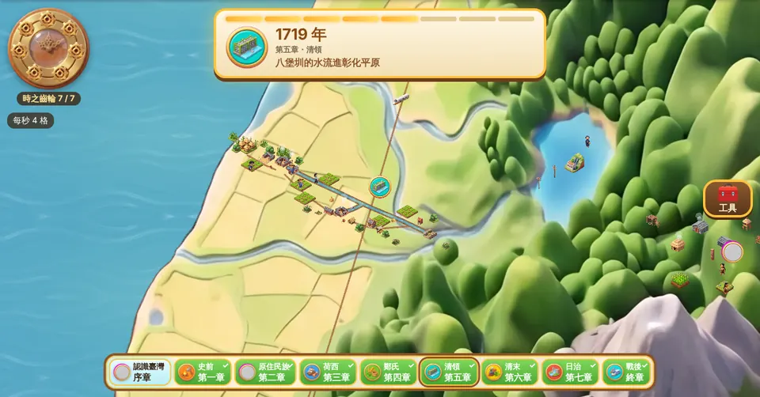
整座島一段一段亮起來
每過一章，大地圖上就會出現那個時代的人物、建築和建設，孩子看得到臺灣是怎麼一步步變成今天的樣子。
看更多：劇情和「現在的臺灣」
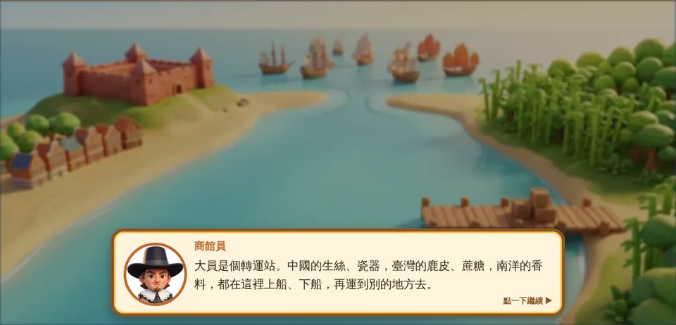
有劇情、有人物、有選擇
每章都有當時的夥伴角色，孩子會遇到要做決定的時候，選擇會影響結局畫面。重點不是背答案，是理解當時的人為什麼這樣做。
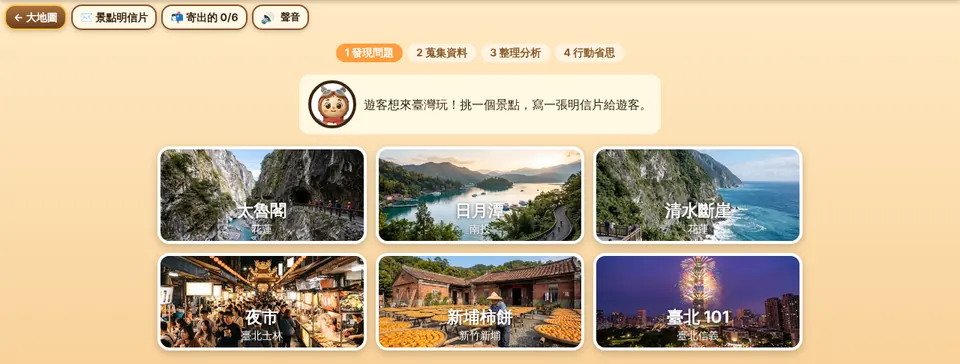
最後回到現在的臺灣
全部破關後，地圖可以切到「現在」，有漁村、規則小鎮、天空港、離島和景點明信片，帶到地理和公民的概念。景點明信片照「發現問題、蒐集資料、整理分析、行動省思」四步走，最後寫一張明信片推薦給遊客。
各家課本的單元順序不太一樣，遊戲照時代排，不一定跟學校進度同步。內容參考課綱與公開資料整理，如果發現哪裡寫得不對，很歡迎告訴我們。